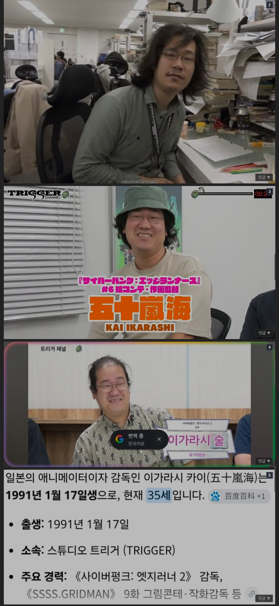

헉...

헉...
재미는 있던데 공개전에 1보다 더 우울하고 암울하다 이래서 기대 엄청 했더만 1이랑 비교도 안되게 ㅈㄴ 밝던디 나만 그렇게 느꼈나 거의 동화 수준이던데
아씨발꿈 닮았네
???????
재능없는데 꿈을 쫓은 케이스구만
1의 그림자가 문제였지 난 2 재밌게 봤음
설레발은 사펑의 근-본인지라 애초에 걸러들었으니
그 누구신지 모르겠지만 죄송합니다...
2 나쁘진 않은데 쿄코가 존나 자캐딸느낌이라 비호감임
친구...야?
35?????
어떤서사 말하는거임?